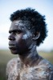

País:Australia, 104 minutos.
Idiomas:Inglés
GénerosSuspenso, Acción, Drama, del Oeste
Director/es:Stephen Johnson
Guionistas:Chris Anastassiades
Códec de vídeo:Unknown
Número: 223


Certificación:NR
Argumento:
Tras luchar en la I Guerra Mundial como francotirador, Travis, ahora convertido en agente de policía en los vastos parajes del norte de Australia, pierde el control de una operación en la que se produce la masacre de una tribu indígena. Cuando sus superiores insisten en ocultar la verdad sobre lo sucedido, Travis se marcha del lugar apenado para regresar varios años más tarde. Su nuevo objetivo consiste en dar caza a Baywara, un guerrero aborigen cuyos ataques a los conquistadores están causando el caos. Travis, ahora convertido en un cazarecompensas, contrata a Gutjuk para que le guíe por los senderos que ha de recorrer. El único superviviente de la masacre provoca que los recuerdos resurjan en la mente de un Travis que ha luchado inútilmente por dejar su pasado atrás.
Reparto 
Medio: Archivo de video,
Localización: D:\Multimedia\Películas\Tierras altas (2020)\Tierras altas (2020).mkv
Prestado: No
Rel. aspecto: Unknown